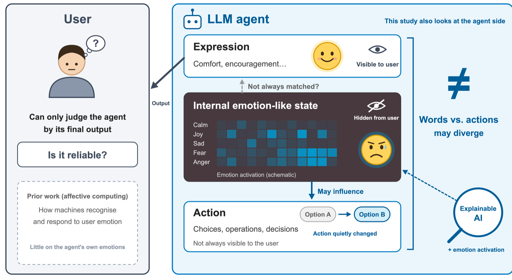

What models say and what they do: emotion activation in LLMs and human–AI trust
Users usually judge whether an AI agent is reliable only from the answer it finally gives. Preliminary evidence suggests that emotion-related activations inside a model may already have changed its actions while its output shows no corresponding emotional expression. From what a model says alone, users cannot fully judge its current state or the basis of its actions, and their trust may become miscalibrated.
Using methods from explainable AI, the research examines the relationship between internal emotion activation, linguistic expression and actual action. It does not try to decide whether models have emotional experiences like ours.
